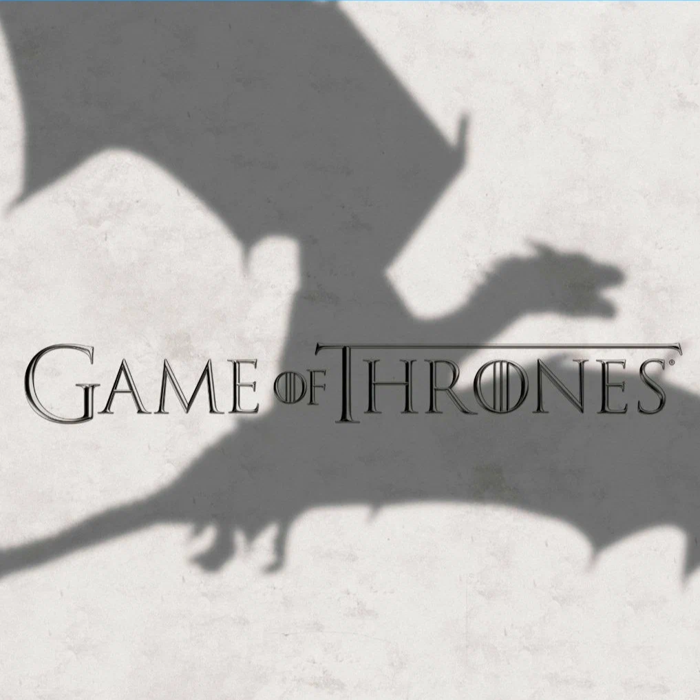
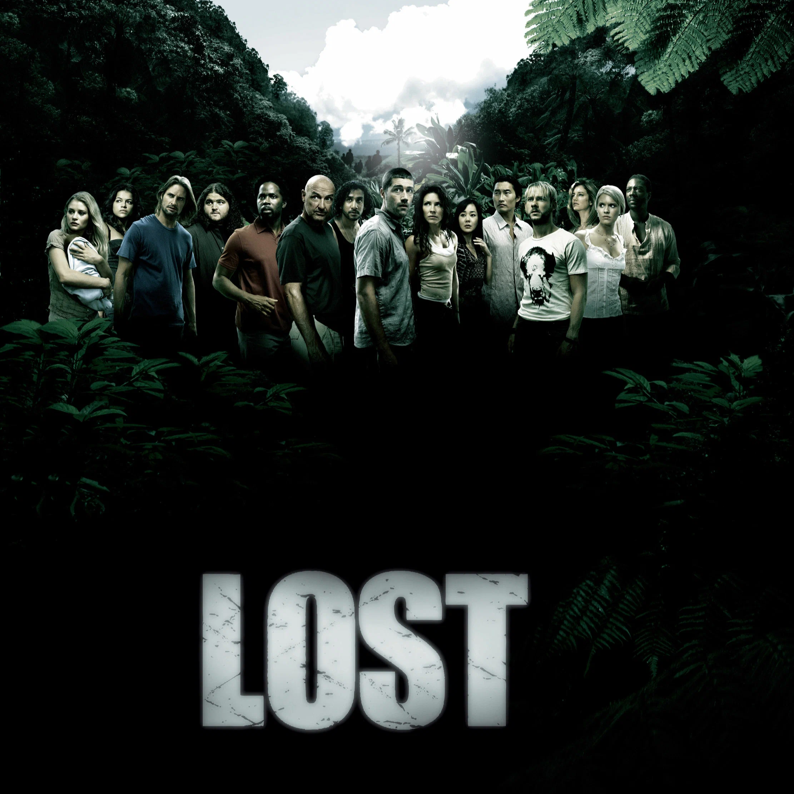
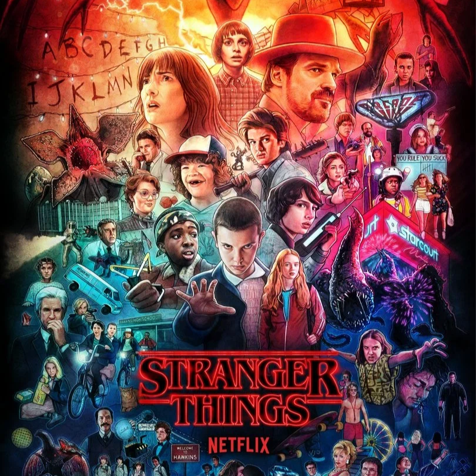
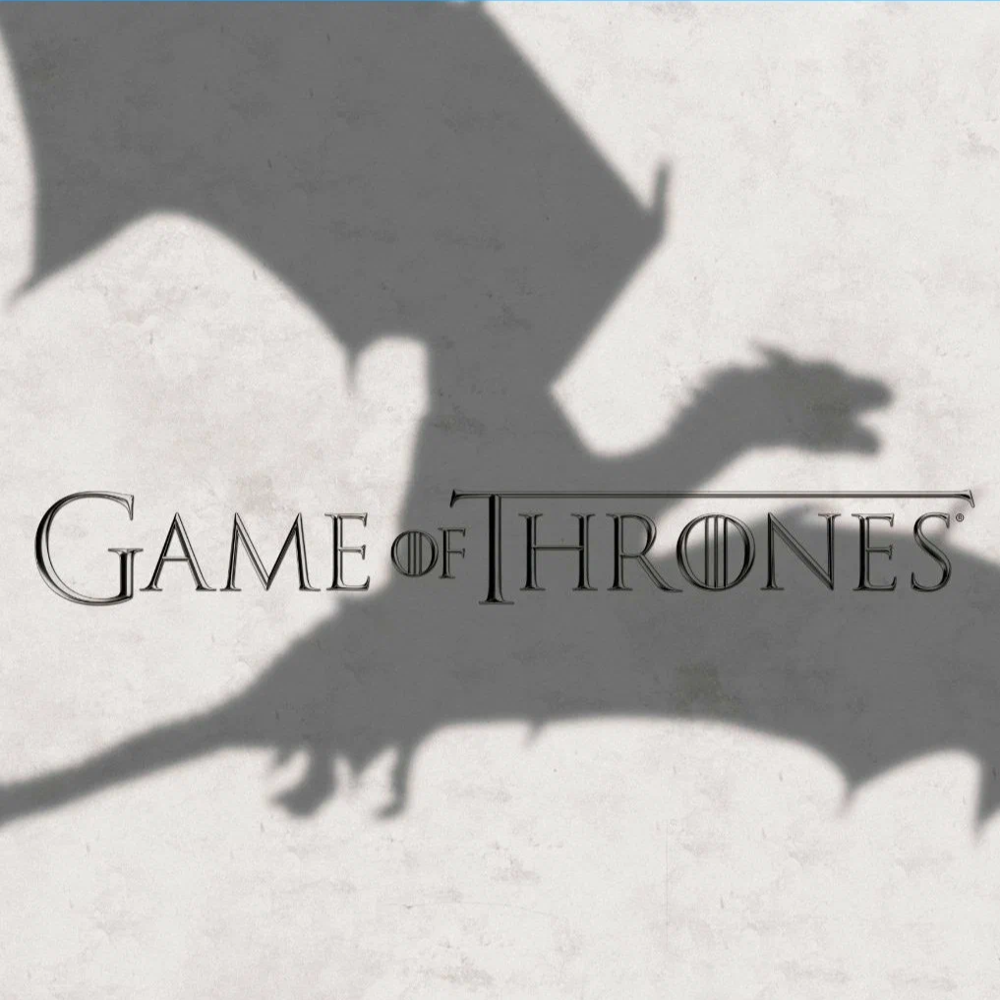
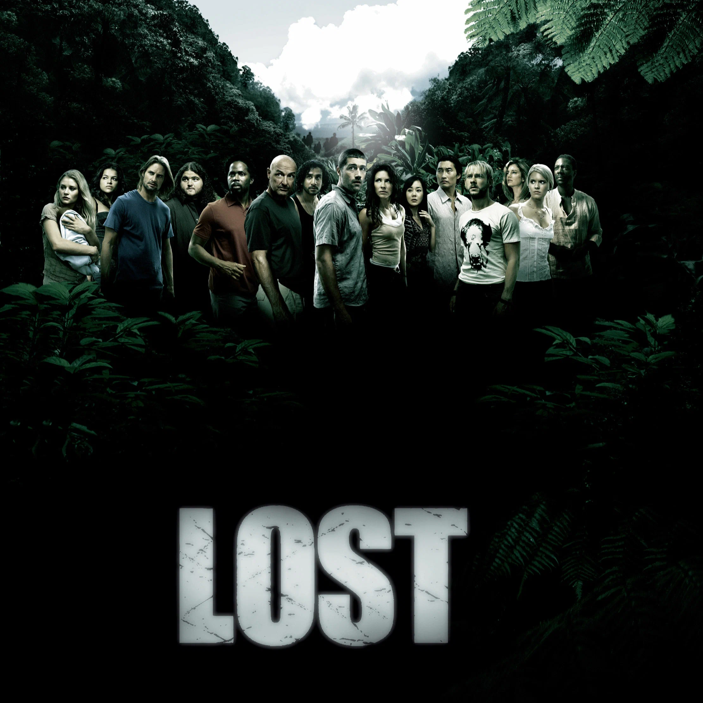
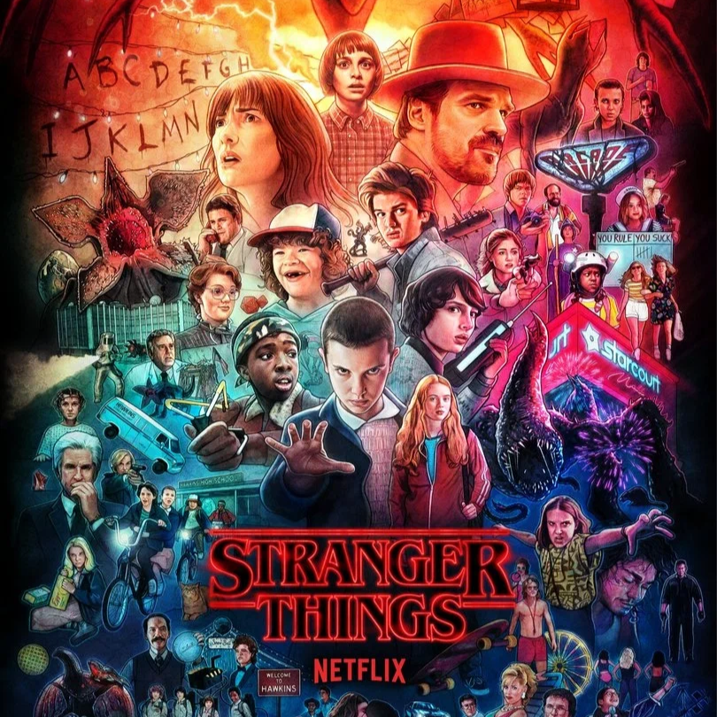
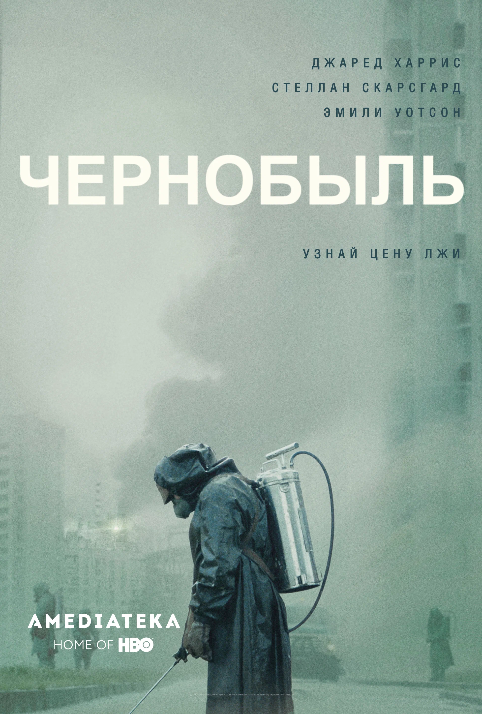
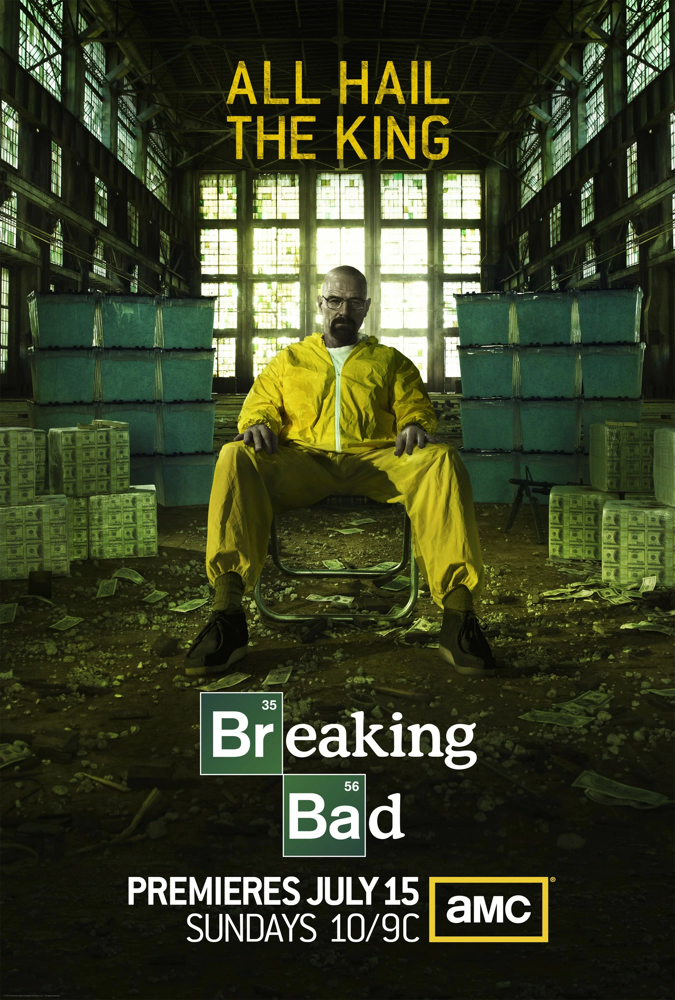
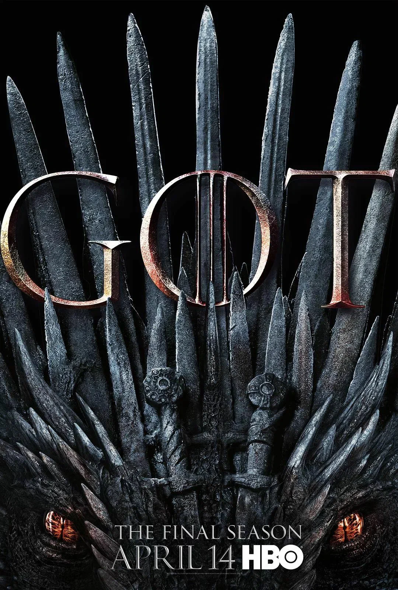

Самые популярные сериалы
Список самых популярных сериалов
 





Чернобыль (HBO)
«Чернобыль» — это мини-сериал, выпущенный в 2019 году, рассказывающий о катастрофе на Чернобыльской атомной электростанции в 1986 году.
Главные герои сериала — Валерий Легасов (ученый-химик), Борис Щербина (заместитель председателя Совета министров СССР) и Ульяна Хомюк (собирательный образ многих ученых).
Одной из главных тем сериала является безответственность и бюрократия, которые усугубили последствия катастрофы. Сценаристы подчеркивают, как нежелание властей признавать реальный масштаб угрозы привело к значительным человеческим жертвам и экологическим последствиям.
«Чернобыль» получил признание как от зрителей, так и от критиков за реалистичное воссоздание атмосферы 1980-х годов, потрясающую актерскую игру и эмоциональное погружение в трагедию. Он также вызвал обсуждения о роли людей в предотвращении и управлении такими катастрофами в будущем.
Во все тяжкие (Sony Pictures Television)
«Во все тяжкие» (Breaking Bad) — это американский сериал, вышедший в 2008–2013 годах, рассказывающий о превращении школьного учителя химии Уолтера Уайта в наркобарона.
Основные персонажи сериала — сам Уолтер Уайт, его бывший ученик и партнер Джесси Пинкман, а также жена Уолтера, Скайлер.
Одной из главных тем сериала является моральное падение человека, а также его внутренний конфликт между желанием контролировать свою жизнь и последствиями этого стремления. Уолтер Уайт постепенно теряет свою первоначальную цель — помочь семье — и всё больше погружается в преступный мир из-за жажды власти и контроля.
Сериал «Во все тяжкие» получил множество наград и признание критиков за сложных персонажей, неожиданно разворачивающийся сюжет и визуальный стиль. Он считается одним из лучших сериалов в истории телевидения и затрагивает глубокие вопросы о том, как человек способен измениться под давлением обстоятельств и собственных амбиций.
Игра престолов (HBO)
«Игра престолов» — это эпический фэнтези-сериал, основанный на цикле романов «Песнь Льда и Огня» Джорджа Р. Р. Мартина. События разворачиваются в вымышленном мире Вестероса, где различные дома борются за контроль над Железным троном и властью над семью королевствами.
Главные герои — представители разных благородных домов, таких как Старки, Ланнистеры и Таргариены. Каждый из них пытается продвигать свои интересы, сталкиваясь с жестокими испытаниями и моральными дилеммами.
Одной из ключевых тем сериала является жестокость и непредсказуемость мира, в котором люди живут. Нередко герои, казавшиеся главными или непобедимыми, неожиданно погибают, что нарушает традиционные ожидания зрителей.
«Игра престолов» стала культурным феноменом, получившим огромное количество поклонников по всему миру и многочисленные награды.